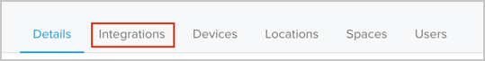
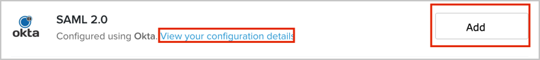
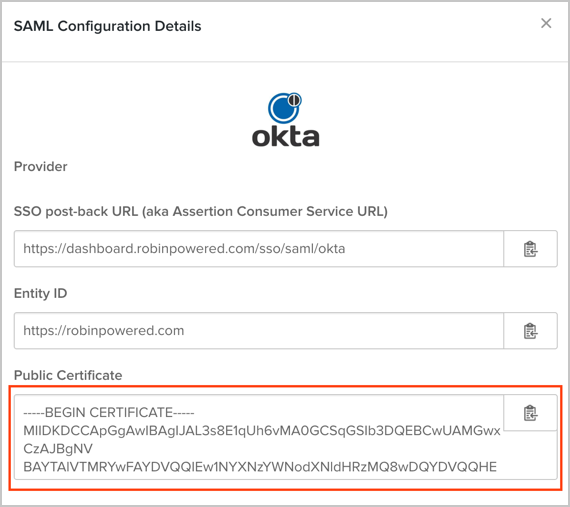

Login to your Robin Enterprise account.
Select the Settings tab:
Select the Integrations tab:

Select Okta from the list, then click Add:

A Configure SAML Single Sign On window will open. Enter the following (see screen shot at end of step for reference):
Provider: Choose Okta.
SAML SSO URL: Copy and paste the following:
Sign into the Okta Admin Dashboard to generate this variable.
Identity Provider Issuer: Copy and paste the following:
Sign into the Okta Admin Dashboard to generate this variable.
Public Certificate: Copy and paste the following:
Sign into the Okta Admin Dashboard to generate this variable.
Click Configure.

Now you have set up SAML, go back to the Integrations page (see step 4), and click the View your configuration details link.
In the pop up SAML Configuration Details page, save a copy of the Public Certificate as robin.cert.

In Okta, select the Sign On tab for the Robin app, then click Edit.
For Encryption Certificate, click Browse to locate, then Upload the robin.cert certificate you just saved.
Click Save.

Done!
Notes:
IdP-initiated flows, SP-initiated flows, and Just In Time (JIT) provisioning are all supported.